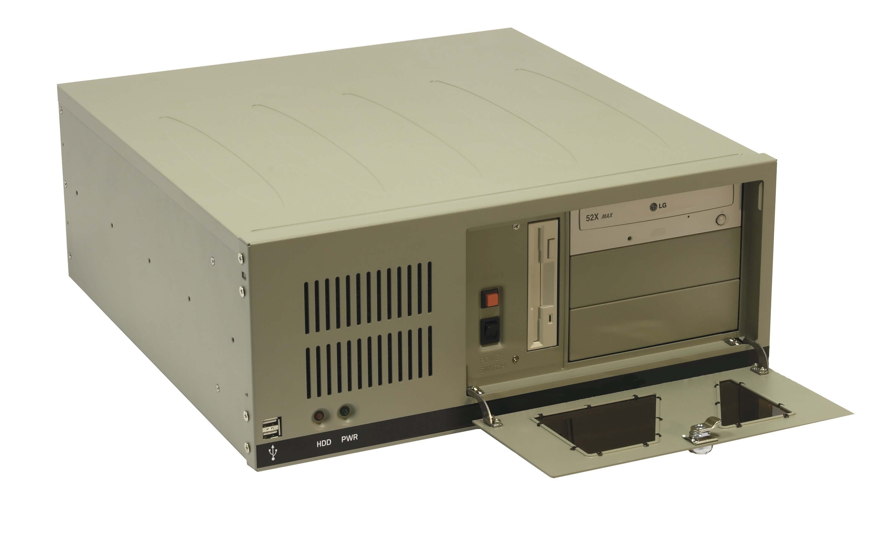

Системы экологического контроля
Системы экологического контроля
Каждое промышленное предприятие в процессе своей работы загрязняет окружающий воздух. Для минимизации загрязнений применяются различные технологические решения: катализаторы, фильтры, изменение технологического процесса и т.п. Дополнительный вклад в загрязнение атмосферы вносят автомобили, котельные, лесные пожары и т.п.
Для контроля уровня загрязнений воздуха применяются два основных типа систем экологического контроля:
• Системы территориального и промышленного экологического мониторинга
• Системы автоматического контроля промышленных выбросов
Обработка измерений оборудования систем, создание экологических баз и необходимых отчетов, а также управление звеньями систем мониторинга осуществляется с помощью
специализированного сертифицированного программного обеспечения.Обладая высококвалифицированным опытным персоналом, ООО «АСУ ПРО» предоставляет на рынке современные надежные и сбалансированные по цене-качество решения в области промышленного мониторинга «под ключ».
Территориальный и промышленный экологический мониторинг
Экологический мониторинг окружающего воздуха (мониторинг) подразделяется на два вида контроля: контроль атмосферного воздуха рабочей зоны и контроль атмосферного воздуха населенных мест (жилой зоны). По сути отличия состоят лишь в уровне измеряемой концентрации загрязнителей, обусловленном различными пределами допустимых концентраций этих зон. Также мониторинг осуществляется как со стороны предприятий, так и со стороны территориальных образований. Состав таких систем идентичен, различия лишь в том, куда поступают данные и для чего они используются. При промышленном мониторинге данные поступают в заводской Центр Мониторинга и используются для мероприятий по уменьшению влияния предприятия на загрязнение окружающей среды и на здоровье персонала. При территориальном мониторинге данные поступают в Центр мониторинга населенного пункта и используются для мероприятий по выявлению загрязнителей и принятию к ним управленческих решений.
В составе Систем мониторинга используются как стационарные посты контроля загрязнений , именуемые ПКЗ, АСКЗА, так и передвижные экологические лаборатории - ПЭЛ.


Стационный пост контроля загрязнений атмосферы
Стационарный пост контроля атмосферы (АСКЗА, ПКЗ) представляет из себя утепленный всепогодный павильон в составе:
- Система электропитания
- Система термиостабилизации
- Пожаро-охранная сигнализация
- Аналитический комплекс
- Устройство сбора и обработки информации
- Система связи
Описание составных частей:
Система электропитания
Система электропитания представляет собой силовой щит и источник бесперебойного питания. Она решает следующие задачи:
- стабилизированное и резервированное оборудования поста;
- защита персонала и оборудования от тока утечек;
- коммутация нагрузок (автоматы сети)
- прогрев павильона до +5 град.С перед включением оборудования (опционально)
Система термостабилизации
Система термостабилизации состоит из управляющего блока *, вытяжного вентилятора, кондиционера и отопителей и решает следующие задачи:
- поддержание стабильной температуры внутри павильона;
- автоматическое управление кондиционером и отопителями*;
- управление вытяжным вентилятором;
- передача телеметрии на устройство сбора и обработки информации.
* термостабилизация поста может быть реализована также настройками отопителей и кондиционера или терморозетками, в которые подключаются отопители/кондиционер.
Пожаро-охранная сигнализация (ПОС)
ПОС обычно реализуется штатными устройствами: С2000-4, и различными пожарными/охранными извещателями и решает следующие задачи:
- мониторинг датчиков пожара, вскрытия и т.п.
- передача данных о состоянии ПОС на компьютер
- включение исполнительных устройств при аварийной ситуации (сирена, свет,..) (опционально)
Для более оперативного реагирования не нештатные ситуации наряду со штатной ПОС возможна установка дополнительных извещателей для подключения непосредственно к системам аварийных служб: пожарной и/или охранной.
Аналитический комплекс
Аналитический комплекс представляет комплект оборудования (газоанализаторы, пылемеры, измерители метеопараметров, датчик радиации, калибраторы, баллоны и т.п…).
Измерители метеопараметров и датчик радиации располагаются на метеомачте. Остальное оборудование располагается внутри поста в 19-дюймовых стойках. На крыше поста располагаются блоки пробоотбора.
Устройство сбора и обработки информации (УСОИ)
УСОИ представляет собой промышленный компьютер, расположенный в подрессоренной 19-дюймовой стойке, с необходимыми коммуникационными интерфейсами и специализированным программным обеспечением и решает следующие задачи:
- опрос измерительного оборудования
- опрос телеметрии
- первичная обработка информации
- формирование локальной базы данных
- управление измерительными каналами
- формирование локальных отчетов
- коммуникация с Центром мониторинга посредством Системы связи
Система связи
Система связи это коммуникационное оборудование, которое под управлением УСОИ обеспечивает передачу информации и команд между постом и Центром мониторинга.
Основные применяемые каналы связи:
- выделенная линия (модем выделенной линии)
- телефонная коммутируемая линия (модем телефонной линии)
- сотовая связь (GPRS/3G модем)
- радиоканал (радиомодем + радиостанция)
- Ethernet/Internet (встроенный LAN-порт)
- WiFi/WiMax
Исполнение и состав конкретного поста зависит от выполняемых задач. Стандартный набор компонентов для измерений в городской черте: Пыль PM10(PM2,5), CO, NO, NO2, SO2, CH4, Метеопараметры. При измерениях в зоне предприятий делается упор на измерения конкретных компонентов, характерных для производства.
Основные моменты, на которые необходимо обратить внимание при формировании технического задания:
- перечень измеряемых компонентов и пределы измерений (рабочая и/или жилая зоны);
- материал покрытия павильона поста (сендвич-ранели, сайдинг, металл);
- климатические условия (для условия Крайнего Севера требуется специальное исполнение);
- система передачи данных (сотовая связь, радио связь, …)
Передвижная экологическая лаборатория
В составе Систем Экологического Мониторинга часто используют передвижные экологические лаборатории (ПЭЛ). ПЭЛ применяют для решения задач локального мониторинга в заданной точке, а также при невозможности или отсутствии необходимости использовать стационарный экологический пост.
Передвижная экологическая лаборатория контроля атмосферы может выполняться на базе легкового фургона , автобуса (в салоне) или грузового носителя (в кунге) или прицепа. Прицеп является частным случаем стационарного экологического поста.
Основные составные части ПЭЛ:
- Система электропитания
- Система выдвижения метеомачты
- Аналитический комплекс
- Устройство сбора и обработки информации
- Система связи
- Дополнительное оборудование
Описание составных частей:
Система электропитания
Система электропитания включает в себя силовой щит, источник бесперебойного питания (ИБП), бензо- или дизельгенератор (генератор), вытяжной вентилятор, отопители и кондиционер и решает следующие задачи:
- стабилизированное и резервированное питание оборудования ПЭЛ;
- защита персонала и оборудования от тока утечек;
- коммутация нагрузок (автоматическая и ручная);
- коммутация источников питания: внешняя сеть/генератор;
- подключение к внешней сети для подзарядки ИБП;
- подзарядка ИБП от генератора;
- заземление ПЭЛ (выносное).
Система термостабилизации
Система состоит из вытяжного вентилятора, кондиционера и отопителей и решает задачу поддержание температуры внутри павильона. Управление осуществляется в ручном режиме.
Система выдвижения метеомачты
Измерители метеопараметров располагаются на выдвигаемой метеомачте. Во время движения ПЭЛ метеомачта должна быть опущена. Система выдвижения метеомачты решает задачу выдвижения и убирания метеомачты с индикацией в кабину водителя.
Аналитический комплекс
Аналитический комплекс представляет комплект оборудования (газоанализаторы, пылемеры, измерители метеопараметров, датчик радиации, калибраторы, баллоны и т.п…).
Измерители метеопараметров и датчик радиации располагаются на метеомачте. Остальное оборудование располагается внутри поста в 19-дюймовых стойках. На крыше поста располагаются блоки пробоотбора.
Устройство сбора и обработки информации (УСОИ)
УСОИ представляет собой промышленный компьютер, расположенный в подрессоренной 19-дюймовой стойке, с необходимыми коммуникационными интерфейсами и специализированным программным обеспечением и решает следующие задачи:
- опрос измерительного оборудования
- опрос телеметрии
- первичная обработка информации
- формирование локальной базы данных
- управление измерительными каналами
- формирование локальных отчетов
- коммуникация с Центром мониторинга посредством Системы связи
Система связи
Система связи это коммуникационное оборудование, которое под управлением УСОИ обеспечивает передачу информации и команд между постом и Центром мониторинга.
Основные применяемые каналы связи:
- выделенная линия (модем выделенной линии)
- телефонная коммутируемая линия (модем телефонной линии)
- сотовая связь (GPRS/3G модем)
- радиоканал (радиомодем + радиостанция)
- WiFi/WiMax
Дополнительное оборудование
Учитывая мобильность ПЭЛ, круг выполняемых её функций можно расширить, добавив ручной пробоотбор с исследованием образцов как на месте, так и в стационарной лаборатории. Для этого в состав ПЭЛ вводят, например, пробоотборники, надувные лодки, буры, холодильники, мойки, сушки и т.п.
Исполнение и состав конкретной передвижной лаборатории зависит от выполняемых задач. Стандартный набор компонентов для измерений в городской черте: Пыль PM10(PM2,5), CO, NO, NO2, SO2, CH4, Метеопараметры. При измерениях в зоне предприятий делается упор на измерения конкретных компонентов, характерных для производства.
Основные моменты, на которые необходимо обратить внимание при формировании технического задания:
- перечень измеряемых компонентов и пределы измерений (рабочая и/или жилая зоны);
- машина-носитель (легковая, грузовая, прицеп, кунг);
- климатические условия (для условия Крайнего Севера требуется специальное исполнение);
- система передачи данных (сотовая связь, радио связь, …)
- дополнительное оборудование (мойка, печка СВЧ, сушка, пробоотборное оборудование, надувная лодка, буры и т.п.)
Контроль промышленных выбросов
Федеральным законодательством предприятиям первой категории по загрязнению атмосферы предписано иметь автоматические системы контроля промышленных выбросов (АСКПВ). Мониторинг выбросов промышленных предприятий осуществляется непосредственно в месте организованного выброса — на трубе, газоходе и т.п.. При этом существуют различные варианты как способа измерений (непосредственно на трубе или с отбором пробы), так и обработки пробы («горячий-влажный» анализ, «сухой-холодный» анализ). Каждый из этих вариантов имеет свои преимущества и недостатки.
Решение по предложению оптимального метода измерений возлагается на производителей систем мониторинга выбросов, задача которых состоит в анализе характеристик конкретного источника выбросов по опросным листам и другим источникам данных, оценке способности того или иного метода измерений выполнить метрологические требования к измерениям. Результатом описанного выше анализа источника выбросов должно явится техническое решение, содержащее обоснование по выбору того или иного метода измерения. Задача предприятия — выбрать решение, которое обеспечит качественные и надежные измерения при адекватной стоимости- как создания системы, так и её дальнейшего обслуживания.
В соответствие с ФЗ№7 и ФЗ№219 предприятия, относящиеся к 1 категории по загрязнениям окружающей среды обязаны установить у себя автоматическую систему контроля выбросов. Конкретный список источников приведен с Приказе № 154 от 18.04.2018 Министерства природных ресурсов и экологии РФ.
Варианты исполнения систем
Неэкстрактивные системы, метод прямого измерения «In situ» Измерительные ячейки располагаются непосредственно на трубе:
Достоинства неэкстрактивных систем:
- низкая начальная стоимость системы;
- измерение происходит непосредственно в источнике выбросов;
- возможность подключения несколько ячеек к одному анализатору;
- небольшое количество составных частей измерительной системы;
- насосов в системе, как элемента снижающих надежность системы.
Недостатки неэкстрактивных систем:
- необходимо обслуживать аналитическую ячейку, расположенную на большой высоте или труднодоступном месте;
- негативное влияние запыленности пробы и конденсации влаги из дымовых газов на работоспособность газоанализатора;
- на каждый отдельный контролируемый компонент необходима собственная измерительная ячейка и, соответственно, отдельное отверстие в трубе;
- ограничения в выборе места установки ячейки по температуре газов и конструктиву дымохода;
- для выполнения калибровочных процедур необходим демонтаж анализатора.
Система состоит из:
- измерительных ячеек, которые располагаются непосредственно на измеряемом источнике;
- газоанализаторов и управляющего компьютера со специализированным программным обеспечением, которые находятся в термостабилизированном павильоне/боксе или помещении вблизи измеряемого источника.
Экстрактивные системы
Экстрактивные методы измерения подразумевает извлечение пробы из источника выбросов, транспортировку и дальнейший анализ в газоанализаторе.
Экстрактивные методы анализа разделяется на следующие направления: «сухой/холодный», «влажный/горячий», « с разбавлением».
Все экстрактивные системы состоят из:
- пробоотборных устройств, устанавливаемых непосредственно на источнике выбросов
- подогреваемой линии транспортировки пробы до системы пробоподготовки
- системы пробоподготовки, газоанализаторов, системы калибровки и управляющего компьютера со специализированным программным обеспечением, расположенных в термостабилизированном павильоне/боксе.
«Сухой/холодный» экстрактивный метод анализа
При «сухом/холодном» методе анализа проба извлекается из источника выбросов обогреваемым пробоотборным зондом, транспортируется по обогреваемой линии, попадает в систему пробоподготовки, где термостабилизируется и осушается согласно требований к пробе на входе газоанализатора:
«Влажный/горячий» экстрактивный метод анализа
«Влажный/горячий» метод анализа отличается от «сухого/холодного» по сути отсутствием осушителя/охладителя: на всех этапах прохождения пробы и во время ее анализа в газоанализаторе, температура пробы поддерживается выше температуры точки россы (120-180°С):
Метод экстрактивного анализа «с разбавлением»
При этом методе проба газа разбавляется нулевым газом, либо непосредственно в месте отбора (в пробоотборном зонде), либо в анализаторном шкафу (в разбавителе). Разбавлением добиваются следующих целей: проба становится сухой и холодной, полученная концентрация позволяет использовать точные приборы экологического класса с референтными способами измерения. Недостатками систем с разбавлением можно считать необходимость постоянного контроля за точностью разбавления, а также невозможность измерять уровень кислорода в пробе.
Составные части систем
Пробоотборнное устройство
Для отбора пробы используются пробоотборные устройства, состоящие из пробоотборной трубки, вводимой непосредственно в газоход или дымовую трубу, и пробоотборного зонда, который осуществляет функцию первичной фильтрации и разграничения технологического процесса и измерительной линии:
Обогреваемая линия транспортировки пробы
Представляет собой фторопластовую трубку с подогревом, обеспечивающим поддержание температуры пробы внутри трубке не ниже точки росы 120-180°С. Задача линии – довести пробу газа до блока пробоподготовки.
Блок пробоподготовки
В состав блок пробоподготовки для «влажных/горячих» систем входит противопылевой фильтр. Блок пробоподготовки «сухих/холодных» систем содержит дополнительно устройство стабилизации пробы по температуре и влажности на микропроцессорном управлении, приводит пробу к нужным для газоанализаторов параметрам, а также защищает газоанализаторы от аэрозолей и влаги, способных вывести его из строя.
Газоанализаторы, система калибровки
Газоанализаторы выбираются в зависимости от выбранной системы анализа. Для «сухого/холодного» метода и метода «с разбавлением» доступны как специализированные приборы, например, Thermo Scientific 60i:
так и широкий спектр приборов экологического класса с референтными способами измерения.
Для других методов измерения используются только специализированные приборы под данный конкретный метод измерения.
Для калибровки газоанализаторов используются баллоны с поверочными газовыми смесями (ПГС), управление осуществляется управляющим компьютером
Управляющий компьютер
Управляющий компьютер выполняется на базе промышленного компьютера с набором необходимых коммуникационных плат и специализированным программным обеспечением.

Термостабилизированный павильон
Павильон для расположения блока пробоподготовки, газоанализаторов , системы калибровки и управляющего компьютера должен располагаться на максимально близком расстоянии от измеряемого источника для минимизации потерь при транспортировки пробы. Внутри павильона должна поддерживаться комфортная температура 15-23 °С. Вместо павильона предприятия могут предоставить для расположения оборудования отапливаемые помещения.
Система связи
Система связи - коммуникационное оборудование, которое под управлением компьютера обеспечивает передачу информации и команд между постом и Центром мониторинга предприятия.
Основные применяемые каналы связи:
- выделенная линия (модем выделенной линии)
- телефонная коммутируемая линия (модем телефонной линии)
- сотовая связь (GPRS/3G модем)
- радиоканал (радиомодем + радиостанция)
- Ethernet/Internet (встроенный LAN-порт)
- WiFi/WiMax
Программное обеспечение экологического мониторинга
Экологическое программное обеспечение ООО «КМП-Софт» зарекомендовало себя на рынке как наиболее гибкое (способное удовлетворить все пожелания заказчика) и лучшее по соотношению цена-качество. ООО «АСУ ПРО» имеет дилерское соглашение о представлении ПО ООО «КМП-Софт» на территории Оренбургского региона.
Экологическое программное обеспечение (ПО) подразделяется на ПО измерительных звеньев (стационарных экологических постов, передвижных лабораторий, аналитических стоек систем контроля промвыбросов), и ПО верхнего уровня, установленным на сервере или на рабочих местах экологов, технологов и т.п.. Каждое ПО измерительного звена содержит сертифицированное программное ядро «Пост контроля загазованности и выбросов», которое обеспечивает метрологически безупречную обработку первичной информации с измерительных датчиков.
Программное обеспечение для Систем территориального и промышленного экологического мониторинга
Специализированное сертифицированное программное обеспечение « Ecological Software System» является универсальным программным комплексом для стационарных постов и передвижных экологических лабораторий и решает задачи:
- опрос измерительного оборудования
- опрос телеметрии
- первичная обработка информации
- формирование локальной базы данных
- управление измерительными каналами
- формирование локальных отчетов
- коммуникация с Центром мониторинга посредством Системы связи
Внешний вид главного экрана:
Мобильные решения:
Мобильные решения позволяют оперативно получать информацию о состоянии системы мониторинга.
Основные преимущества:
- открытая архитектура программного обеспечения, удаленная поддержка, внесение изменений по требованию Заказчика;
- масштабируемость программного обеспечения;
- удаленное управление измерительной сетью;
- реализация на Java с поддержкой MS Windows, MacOS, Linux;
- любой вид лицензирования системных программных средств;
- мобильные приложения, Android, СМС-запросы;
- интеграция с внешними системами;
- сертифицировано ВНИИМС;
- используется в Системах ПЭМ объектов ПАО «Газпром».
Программное обеспечение для Системы автоматического контроля промышленных выбросов
Специализированное сертифицированное программное обеспечение « ГОРИЗОНТ» является универсальный программным комплексом для систем автоматического контроля промышленных выбросов предприятий. Оно решает задачи:
- опрос измерительного оборудования
- опрос телеметрии
- первичная обработка информации
- формирование локальной базы данных
- управление измерительными каналами
- формирование необходимых отчетов
- возможность отправки данных во внешние базы данных
ООО «АСУ ПРО»
8-800-222-38-82
www.asupro.ru
asupro@asupro.ru
Руководитель направления развития производства
Алексей Зарубин
+7-916-157-40-60>
zarubin@asupro.ru